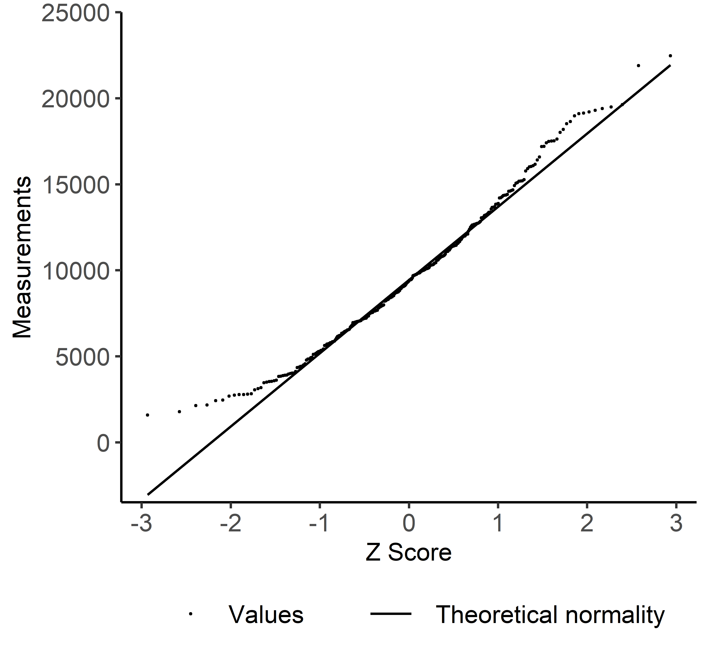
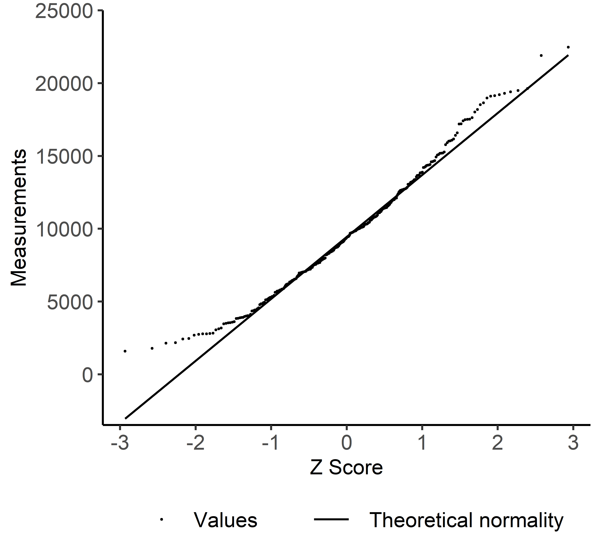

distFit: An R package for investigating goodness-of-fit with statistical distributions
Paul Beagon
30 September 2020
Summary
Often a real-world data set comprises only positive values in a unimodal distribution. The asymmetry and skewness of the data set, however, prevents its accurate representation by a normal distribution. Energy use is one example. Its positive values are more accurately parameterised by a log-normal distribution or Weibull distribution; the latter contains approximations of the log-normal and normal distributions. A two-parameter Weibull distribution is defined by its shape and scale. The distribution’s versatility is implemented by its shape parameter – values above 2.5 or 3.6 approximate to log-normal or normal distributions respectively (NCSS LLC 2019, p 122-15).
The distFit R package offers threefold functionality to investigate a data set’s goodness-of-fit with normal and Weibull distributions. First, calculates from the data set the shape and scale parameters of its theoretical Weibull distribution, second, compares the data set to plots of both distributions, and third, evaluates the data set’s goodness-of-fit with both distributions.
Motivation and package functions
A gap exists in automated investigation if a real-world data set fits normality, or diverges to a Weibull distribution. Regarding use cases, Koch and Girard (2011) proposed the log-normal distribution to represent the large variation in energy use by homes in the same neighbourhood. The Weibull distribution has been used to fit the energy-use data of 400 Swedish detached houses (Munkhammar, Rydén, and Widén 2014), and 1643 social housing units in Northern Ireland (Irwin, Monteith, and Beattie 1986).
The aforementioned investigation should yield publishable plots, complemented by quantitative goodness-of-fit metrics. Package distFit provides functions to compare the goodness-of-fit between the two distributions. Listing the four functions intuitively: 1) QQcompare() plots the data set around the quantile-quantile (QQ) normality line, 2) findWeibullParams() calculates the Weibull shape and scale parameters, 3) histWeibull() plots the data set’s histogram and smoothed line alongside its Weibull distribution and finally, 4) fitNormalWeibull() tests and quantifies the error of the data-set fits with the two distributions.
The four functions allow easy comparison of the data-set fit with both distributions, both visually and quantitatively. Plot functions QQcompare() and histWeibull() build on the popular ggplot2 library (Wickham 2016). Furthermore, both plot functions feature argument interval.number to easily change to axis intervals, and also resize histWeibull() histogram bins. These axis-interval changes are elegantly controlled by the pretty() function (R Core Team 2013), and transparent to the user. The parameters obtained from findWeibullParams() enable fitNormalWeibull() to test if the data-set values arose from the theoretical Weibull distribution. For details of the implementation in R, see the Anderson-Darling (AD) k-Sample test in the kSamples library (Scholz and Zhu 2019). Selection of the Anderson-Darling test is explained in literature: Keller (2011), Engmann and Cousineau (2011), Nelson (2018).
Finally, the goodness-of-fit to each distribution are quantified by two indices: coefficient of variation of the root mean square error CV(RMSE) and normalised mean bias error (NMBE). Each index reveals a distinct characteristic of the fitting errors. Specifically, CV(RMSE) and NMBE quantify the errors’ standard deviation and mean respectively (Reddy, Maor, and Panjapornpon 2007). See Mathematics section for formulas to calculate the Weibull parameters, CV(RMSE) and NMBE.
Mathematics
The “graphical method” or linear regression is a popular method to estimate Weibull parameters, for instance in wind energy assessment (Wais 2017). Conversion of a Weibull cumulative distribution to a linear equation requires double logarithms on each side. Q is the probability that an energy value E is less than E\(_i\).
\[\begin{equation*} \label{eq:WeibullCDF} Q(E<E_i) = exp^{-(E_i/C)^k} \end{equation*}\]
Combining Weibull shape (k) and scale (C) parameters forms a linear equation. Fitting this linear equation by least squares, estimates the Weibull distribution parameters in the slope (k) and intercept (-kln(C)).
\[\begin{equation*} \label{eq:WeibullLinEq} ln(-lnQ) = kln(E_i) - kln(C) \end{equation*}\]
The goodness-of-fit indices CV(RMSE) and NMBE are calculated across the total count (n) of measurements in the data set. After the data set is ordered, its measurements (m\(_i\)) are ranked by subscript i in the range 1–n. A predicted data set, also containing a total of n values, is generated from each distribution. Prediction errors equal m\(_i\) subtracted by p\(_i\), the corresponding value in the predicted data set. Finally, \(\bar{m}\) represents the mean average of the measurements.
\[\begin{equation*} \label{eq:CVRMSE} CV(RMSE) = \frac{1}{\bar{m}} \sqrt{\frac{\sum^n_{i=i}(m_i-p_i)^2}{n}} \end{equation*}\]
\[\begin{equation*} \label{eq:NMBE}
NMBE = \frac{1}{\bar{m}} \frac{\sum^n_{i=i}(m_i-p_i)}{n}
\end{equation*}\]
Examples
Building on the statement of need, the following examples use distFit functions to complete a step-by-step data fitting. Each code example processes the 300-row date.frame data read from the package’s test file testData.csv.
1) Plot quantile-quantile values compared to normality
On receipt of a new data set, a first step is to check for a normal distribution, or normality. Sampling from a normally distributed population is commonly required in inferential statistics. Therefore QQcompare() plots a data set’s QQ line of theoretical normality, alongside the its actual values. This plot clearly displays the values diverging from the QQ line. Such divergence is often located at distribution tails, indicated by high absolute Z scores on the horizontal axis.
Each of the following QQcompare() code examples creates a different plot; the second example increases the interval.number from the default three to five in order to elegantly add vertical-axis labels. Both examples default to base.size = 30, ensuring the same text size across both plots.
QQcompare(dataSet)
QQcompare(dataSet, interval.number = 5, label = "User-defined label")  

2) Calculate Weibull parameters
If a data set of positive values is non-normal, an analyst may explore the Weibull distribution. Function findWeibullParams() calculates two Weibull parameters from the data set using a regression method (see Mathematics section). The function returns a list containing the shape and scale values as follows:
> params = findWeibullParams(dataSet)
> params$shape
[1] 2.51
> params$scale
[1] 10816.5For reasons of consistency and coding efficiency, other package functions call findWeibullParams() when obtaining Weibull parameters.
3) Plot histogram compared to Weibull distribution
An analyst may now visualise the data set’s fit to a Weibull distribution. Function histWeibull plots the data set’s bar histogram and smoothed line. The smoothed line displays the data set’s actual density, alongside the line showing the density of the theoretical Weibull distribution.
Each of the following histWeibull() code examples create a different plot from the same data set. The second example increases the interval.number from the default three to eight in order to elegantly add horizontal axis labels. The first example defaults to base.size = 30, but the second example specifies base.size = 20 to separate the more numerous axis labels caused by interval.number = 8.
histWeibull(dataSet)
histWeibull(dataSet, interval.number = 8, label = "User-defined label", base.size = 20)

4) Evaluate goodness-of-fit with normal and Weibull distributions
The last step is to evaluate quantitatively the data-set fits to normal and Weibull distributions. Function fitNormalWeibull() calculates four goodness-of-fit metrics per each candidate distribution. An Anderson-Darling (AD) test produces a test statistic and p-value, followed by the aforementioned indices CV(RMSE) and NMBE. Thus the final list comprises eight metrics, four on the normal distribution, followed by four on the Weibull.
AD tests adopt a null hypothesis that the data set adheres to the specified distribution. Since smaller AD statistics indicate less evidence of deviation from the specified distribution, they cause larger p-values. Put simply, p-values are the probably of incorrectly rejecting the null hypothesis of a the data set arising from the specified distribution. The following results confirm the superior fit to the Weibull distribution. Specifically, a smaller AD test statistic, a larger AD p-value, and smaller CV(RMSE) and absolute NMBE. (NMBE may be negative because it is the mean error, or subtraction, between ordered values of different data sets.)
fitNormalWeibull(dataSet)
$normalADstat
[1] 0.671
$normalADp
[1] 0.5839
$normalCVRMSE
[1] 5.6
$normalNMBE
[1] -0.446
$weibullADstat
[1] 0.155
$weibullADp
[1] 0.9984
$weibullCVRMSE
[1] 2.84
$weibullNMBE
[1] 0.238Acknowledgments
The author thanks Dr Paul Cuffe who encourages publication of code, and Dr Fiona Boland who advised on statistical techniques. This work has emanated from research supported (in part) by Science Foundation Ireland (SFI) under the SFI Strategic Partnership Programme Grant Number SFI/15/SPP/E3125. The opinions, findings and conclusions or recommendations expressed in this material are those of the author(s) and do not necessarily reflect the views of the Science Foundation Ireland.
References
Engmann, Sonja, and Denis Cousineau. 2011. “Comparing distributions : the two-sample Anderson – Darling test as an alternative to the Kolmogorov – Smirnov test.” Journal of Applied Quantitative Methods 6 (May): 1–17. http://www.jaqm.ro/issues/volume-6,issue-3/1_engmann_cousineau.php.
Irwin, G. W., W. Monteith, and W. C. Beattie. 1986. “Statistical electricity demand modelling from consumer billing data.” IEE Proceedings C - Generation, Transmission and Distribution 133 (6): 328. https://doi.org/10.1049/ip-c.1986.0048.
Keller, Paul. 2011. Six Sigma Demystified. 2nd ed. McGraw-Hill.
Koch, Andreas, and Sebastien Girard. 2011. “Urban neighbourhoods – an intermediate scale for the assessment of energy performance of buildings.” ECEEE 2011 Summer Study, 1377–85. https://www.eceee.org/library/conference_proceedings/eceee_Summer_Studies/2011/5-saving-energy-in-buildings-the-time-to-act-is-now/urban-neighbourhoods-an-intermediate-scale-for-the-assessment-of-energy-performance-of-buildings/.
Munkhammar, Joakim, Jesper Rydén, and Joakim Widén. 2014. “Characterizing probability density distributions for household electricity load profiles from high-resolution electricity use data.” Applied Energy 135: 382–90. https://doi.org/10.1016/j.apenergy.2014.08.093.
NCSS LLC. 2019. “Data Simulation: Weibull Distribution.” http://ncss-wpengine.netdna-ssl.com/wp-content/themes/ncss/pdf/Procedures/NCSS/Data_Simulation.pdf.
Nelson, Lloyd S. 2018. “The Anderson-Darling Test for Normality.” Journal of Quality Technology 30 (3): 298–99. https://doi.org/10.1080/00224065.1998.11979858.
R Core Team. 2013. R: A Language and Environment for Statistical Computing. Vienna, Austria: R Foundation for Statistical Computing. http://www.R-project.org.
Reddy, T Agami, Itzhak Maor, and Chanin Panjapornpon. 2007. “Calibrating Detailed Building Energy Simulation Programs with Measured Data - Part I: General Methodology (RP-1051).” HVAC&R Research 13 (2). https://doi.org/10.1080/10789669.2007.10390952.
Scholz, Fritz, and Angie Zhu. 2019. KSamples: K-Sample Rank Tests and Their Combinations. CRAN. https://cran.r-project.org/web/packages/kSamples/kSamples.pdf.
Wais, Piotr. 2017. “Two and three-parameter Weibull distribution in available wind power analysis.” Renewable Energy 103: 15–29. https://doi.org/10.1016/J.RENENE.2016.10.041.
Wickham, Hadley. 2016. ggplot2: Elegant Graphics for Data Analysis. Springer-Verlag New York. https://ggplot2.tidyverse.org.